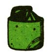

Marc Bristol and other Washington State grassroots musicians wail away on a gutbucket, washboard, and jug (the axe is a gag). For Marc's original homegrown music columnwhich featured gutbucket, washboard, jug, kazoo, musical saw, and spoons "makin' and playin' "instructions-see MOTHER NO. 50. Inset shows gutbucket "notchand bevel"details.
Even homesteaders need to relax and enjoy themselves from time to time, right? And almost everybody these days wants to cut his or her cost of living. So how about a little doit-yourself entertainment?
And that's what this column is all about. Down-home music that you can make . . . and the instruments (which, in some cases, you can also make!) to play that music on.
We may also publish some songs, discuss music as a potential home business, run discographies, bibliographies, and/or include whatever other do-it-yourself music topics you'd like to see.
The important thing is that this is a new column. If you like it, write to me and let me know. If you have some ideas for this feature, let me know that. I'm open to any suggestions or information you care to contribute. I'll even try to answer your questions about down-home music . . . but-both for the benefit of all MOTHER's readers and to ease my correspondence load-I'll deal with those questions, whenever possible, here in this column . . . rather than in personal letters.
Address your correspondence for this column and this column only-to Marc Bristol, 31722 N.E. 180th Place, Duvall, Wash. 98019.
If you've taken any of the suggestions I made in my two previous columns, you have by now [1] made a gut bucket or other musical instrument, [2] acquired some kind of instrument at a bargain price or for nothing at all, or [3] discovered that you were born with a fiddle, banjo, guitar, or whatever already to your name.
In short, the time has now come for us to start thinkin' about what you're going to do with your new (old) musicmaker. Or, perhaps, the question is even more basic than that: How are you-instrument or no-going to get started a'pickin' and a'grinnin' with all the other folks who've already plunged into homegrown music? Where are you going to begin? What's your first step going to be?
Well sir, I don't think there's much of any way for anyone to go wrong in this area of human activity. Not if he or she starts right out thinking of playing music together with one or more other people as a community experience. Community as in "communication". Or, to turn it the other way 'round: Perhaps "communication"-whatever form the act may take-can be defined as "creating community". And, as should be apparent to the readers of this column by this time, I'm happiest when I can do my "community creating" by performing the act of music with some other down-home pickers and singers.
Furthermore, as I've indicated before in this column, I have very definite feelings about the right way and the wrong way for an individual to prepare him- or herself to commit the act of makin' music with others.
In the first place, I think it's absolutely essential that you own your own instrument and that you got it honestly . . . no matter what that instrument may be: a "store-bought", salvaged, or donated guitar, harmonica, fiddle, mandolin, dobro ... a do-it-yourself gutbucket bass, musical saw, set of spoons, jug, washboard . . . even just your own voice.
It doesn't matter what your instrument is, as long as it's yours. It doesn't matter whether you made it yourself, it was given to you, you traded for it, or you bought it . . . as long as you got it honestly and it's yours. The symbolism is important-I would even say inherent-to the concept of communication that I'm trying to get across. The instrument you bring to your pickin' and grinnin' sessions must be yours . . . honestly.
Of course-as I've already indicatedit doesn't have to be fancy. Or expensive. Or even a "real" instrument. Your voice, for instance, can be all the "equipment" you really need to get yourself started in music . . . all you'll ever need, for that matter.
A cappella singing ( singing without any instrumental accompaniment at all) has always been an important form of human expression and, if anything, is now enjoying a resurgence of popularity. In fact, this one very simple (and lowcost) method of "playing music"-if thoroughly explored-can keep you occupiedall by itself-for a long, long time. There's choir singing, for instance ... plus barbershop quartets, and choruses for you to look into. Philadelphia street-style singing, field hollers, and shape-note singing to try your vocal cords on. There's the Appalachian gospel style and mantra singing (as done by Buddhists and others at celebrations and before breakfast and such). There are native American chants and Polynesian chants and sea chanteys and . . . well, you get the idea.
IL's so easy to "slip into" music this way too. Just open your mouth and sing! Don't worry about how you sound at first. Even little birds have to practice before they can sing. So go ye and do likewise. Practice! Anywhere and any time you get the chance. I received my
own voice training while delivering pizzas in my car and singing along with the radio. Practice! As you develop control over your voice singing by yourself, you'll automatically develop enough selfconfidence to start singing with others.
And that time will come! No matter how selfconscious you may think you are now . . . if you practice the use of your singing voice religiously, sooner or later you will find yourself with a person or people who make you feel that you can express yourself musically with them to the best of your ability (whatever that ability may be) and they will approve. That's when the real magic will begin. Once you get yourself past that hurdle, the race is as good as won . . . and every time you sing your very best for others after that, it will be better than your last best effort. (I'm sure this rule extends to other areas of existence as well. Music presents many good analogies to life in general.)
Of course, there's no need-either-to try to push your "public debut" before you're ready for it. Always bear in mind that music is a valuable method of selfexpression, both public and private. Remember-first and foremost-that your music must please you.
I, for one, have spent many enjoyable hours playing music and/or singing just for myself on the front porch or out in a field somewhere. One shouldn't overlook the need to communicate with oneself. (Or with the dandelions, the red-winged blackbirds, all the plants and animals and the rest of creation that can hear you . . . whether there are any other people around or not.)
What it all boils down to is that humans, basically, are social and gregarious . . . even the shy ones. Everyonewhether or not he or she will or can admit it-wants to "reach out" and communicate with him- or herself . . . with others . . . with the rest of creation. And one of the easiest and most satisfying ways to do that reaching out is with your voice . . . musically.
So sing out! For yourself. For the flowers. For the clouds. For the wind. For the rain. For the sunshine. For and with other people. Make a start right now. If it doesn't quite come naturally at first, it soon will! The energy-the need-for singing is inherent in life itself. All you have to do to unlock it is have faith in what you're doing . . . and that will develop in no time flat once you've made your start.
The same, obviously, can be said for the playing of "real" musical instruments. And, I believe, once you've taken the first big step of starting to sing . . . and the second big step of singing with others . . . the next major leap forward in your do-it-yourself-music liberation will probably take place when you own your first truly playable instrument. And the leap after that will be yours when you begin to play your new instrument for and with others.
Those are the big milestones. The markers along your upward path. The "important" known reference points that you'll start to use to measure your musical progress.
You probably will realize that progress much faster, however, if you forget all about "working" your way from one of these milestones to the next. Relax. Homegrown music is supposed to be fun, remember? Don't turn it into a job. And - for gosh sake-don't lock yourself off in a closet somewhere and practice, practice, practice until you're perfect before allowing yourself to play and sing with others.
It's more fun, it's easier, it's better when you learn music by osmosis . . . much the same way that water is absorbed through the walls of a plant's cells. (As a matter of interesting fact, music can affect the osmotic process-it can alter the rates at which fluids pass through plant cell walls-and, thus, can affect the growth of vegetation. See Chapter 10 of Peter Tompkins and Christopher Bird's book, The Secret Life of Plants, for more on this subject.)
So get close to other musicians, even before you think you're ready to join in their group jam sessions. Especially before you're ready to carry your full weight in those sessions. Observe those musicians as they play. Pay close attention to what they do and how they get the effects they get. Absorb their techniques. Study what they do to make the sounds they make.
And, even more important, open your awareness to the "vibrations" that those more accomplished musicians give off as they play their music. Yeah, I know it sounds sorta strange to folks who are just startin' out . . . but I have a strong feeling that music is transmitted telepathically as well as aurally. And you can learn a lot more a lot faster from an accomplished musician and increase the energy level of whatever he or she is playing just by giving full attention to his or her tune and how he or she plays it.
On second thought, maybe this notion of mine isn't so strange after all. We all know that when two musical notes are played together in harmony, their vibrations reinforce each other and make the sound stronger. Likewise, when one string on a stringed instrument is played . . . all other strings that are tuned in harmony with it will vibrate too, even if they're not plucked. (This is called a "sympathetic vibration" and you can demonstrate it to yourself if you've never seen it take place. Just play a note-any note-on a piano while you press down on the "sustain" foot pedal and look inside the piano's case to see which other strings vibrate too. Surprise! Several strings vibrate . . . and the closer the sympathetically tuned strings are to the one note you played, the more they will move.)
It's the same with people. Each indi. vidual is an energy source. You're a source of energy. So, if you want to learn to play (vibrate) musically, put yourself close to others who play. Get in tune with what they're doing. That alone will in. crease the energy level of the tunes they're pickin' out, and you'll begin to feel ( not just listen to) the melodies, harmonies, rhythms, emotions, and inflections that your friends are makin'.
Great! Now start snappin' those fingers and clappin' those hands. Start singing along. Get a pair of spoons or make up some sandpaper blocks on the spot. Join in! That's what musichomegrown music, at any rate-is really all about. Music is a magical connection . . . and the more energy you add to the music, the more magical and the more connecting it will be.
In short, there's really nothing mysterious about music at all. It's just like the rest of life: The more you give, the more you'll get back (usually with interest). So start givin' . . . now! . . . even if you have nothing to give with but your fingers (snap 'em!), your hands (clap 'em!), and your voice (sing!). That's all it really takes for anyone to get started in down-home music.
And don't worry about being a beginner! I've never yet met a musician who knew all there was to know about music . . . or even a small part of it. We're all beginners. What're you waitin' for? Come on in with the rest of us duffers and join the fun! Get started right now. That's the important part. All the restinstruments, fancy pickin', maybe even a proper career in music-will follow. For now, though, the name of the game is just picking up the vibrations. . . getting in on the action any way you can . . , and having fun.
My special thanks to everyone who's written to express his or her enthusiasm for this column. The suggestions you've already made will help guide me as I write future installments of Homegrown Music . . . and additional comments or suggestions will always be welcome when mailed to the address at the top of the opposite page. Right now I'd particularly like to hear about any good books on the subject of musical instrument repair (I'm currently working on a bibliography of such titles to be printed in a future column).
And here's a special note: My friend Billy Hults is putting together a book about the playing of washboards and other homemade instruments. He intends to interview the living greats (such as Washboard Sam, Jeff Muldaur, Jeff Hanna, and Cleveland Chenier) about equipment, techniques, etc. But he also needs a good selection of photographs of washboard players in action, additional tips and hints from anybody and everybody interested in the instrument, etc. If you know anything at all about musical washboards, then please write directly to Billy Hults, 128 S.W. Porter Street, Portland, Oregon 97201.
|
 |
|
|